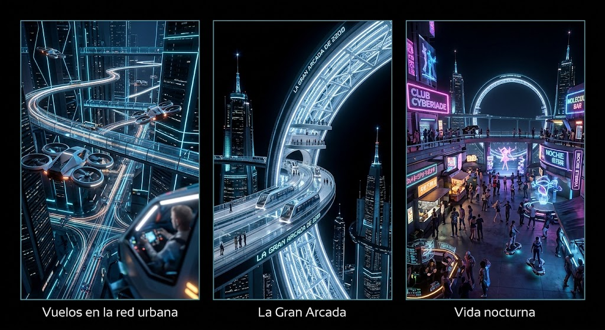

Da un salto de dos siglos y descubre el punto culminante de la civilización humana. Camina entre rascacielos que rozan las nubes, observa el tráfico fluir por autopistas de luz y contempla la imponente arquitectura orbital que domina el cielo nocturno. Experiencias destacadas: Vuelos en la red urbana: Recorre la metrópolis a bordo de naves aéreodinámicas de alta velocidad. La Gran Arcada: Admira la megaestructura anular que conecta el planeta con el espacio exterior. Vida nocturna del futuro: Disfruta de la gastronomía molecular y espectáculos de neón en las plataformas superiores.
VIAJA AHORA